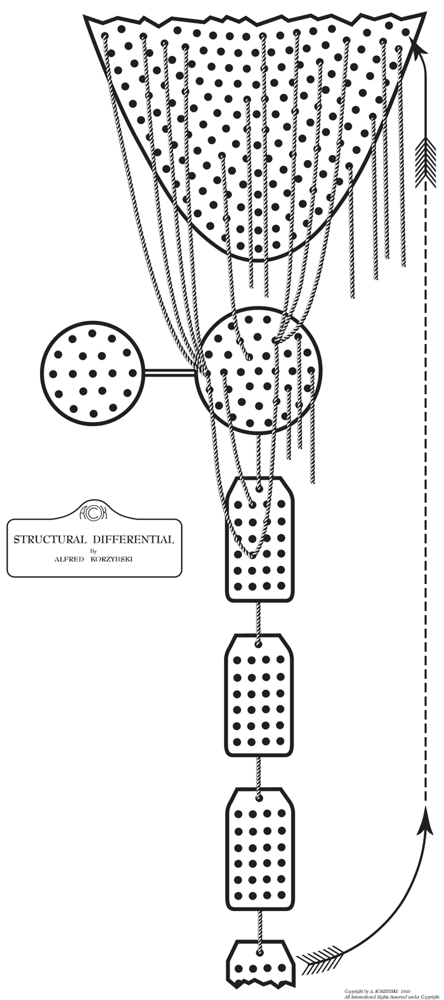

4 Philosophical Guideposts
This book is motivated by a specific philosophical perspective on epidemiology. Since everything else in here flows from this foundation, it’s important that we start with a little bit of it.
Public Health and epidemiology are sometimes accused of being atheoretical in nature. That is, reflecting a kind of “just the facts ma’am” approach that obscures the ideological roots and operating assumptions of the field. As many have pointed out, this ostensibly neutral or neutral-ish approach skirts the line of what is called “scientism”, i.e. a kind of fetishization of a supposedly objective ‘view from nowhere’. This has fed into a methodological orthodoxy, particularly around the fraught and messy notion of causal inference.
4.1 “The Map is Not the Territory”
The phrase “the map is not the territory” is attributed to the Polish-American polymath scientist, author and philosopher Alfred Korzybski (1). The phrase is pretty self-explanatory, but essentially means that we should not mistake our representations of reality for reality itself. In the social sciences, this insight is closely tied to the critical realist perspective.
Sayer (2) explains that the “real” in realism refers to the idea that realists accept reality as a fixed, external thing. The critical spect of it comes from a belief that our perceptions and interpretations of this outside reality are always approximations which are inherently subjective in nature.
Dunn (3) has outlined some of the ways a critical realist approach can be useful in epidemiology, particularly in the study of health inequities. Dunn states that the goal of realist science is to generate knowledge that is “practically adequate” but that is understood to be fallible and always subject to revision. This emphasis on fallibility also short circuits the quest for methodological perfection and obviously militates against any hard-and-fast rules for causal inference.
4.2 Open vs. Closed Systems
Both Dunn and Sayer emphasize the idea that it is more helpful to think in terms of “extensive” and “intensive” research rather than in terms of qualitative vs. quantitative research.
In Dunn’s version of events, extensive research is about obtaining surface-level information on large numbers of people. The idea here is to find regularities across individuals with a similar health condition or to look for key features of a population. Sayer (2) refers to this as a search for “formal relations of similarity” between “taxonomic groups”, e.g. people of a certain race/ethnicity, age, gender, etc.
By contrast, intensive research is about understanding processes, often using a smaller number of observations than might be considered acceptable or useful for extensive research. But the nature of the data employed for intensive research will also be different and more granular, with more of what we now call “metadata” on both individuals and their relations to each other in physical space, social networks, and temporal context. it is focused on understanding the particular relationships between people and institutions as well as how these operate in the context of local and more macro-structural contingencies.
4.3 A personal connection
While the idea that “the map is not the territory” is quite intuitive, it is just a key that unlocks the door to a host of important intellctual consequences. For me, the dominoes may have begun to fall particularly early on: The phrase and the various books it has been written in, as well as the coffee mugs it has been printed on, have played an unusually central role in my own life. My mother, Marjorie Zelner, was the sole full-time employee of the Institute for General Semantics, the organization founded by Alfred Korzybski, from 1989 until her death in 2000. For a time, the sword carried by Alfred Korzybski when he was a member of the Polish cavalry for some reason resided in our downstairs coat closet.
The (very small) field of General Semantics (GS), founded by Korzybski and Marjorie Kendig, is focused on what happens when verbal language is mistaken for the reality of the real-world phenomena it seeks to describe. While the focus of GS is on the relationship between language, reality, and human psychology, it must have seeped into my understanding of public health and epidemiology somewhere along the line.
When I was in middle school and high school in the 1990s, I would earn spending money by helping my mom to box up and ship mail-order copies of Science and Sanity, the book where the phrase was first published, to the small band of people around the world who were interested in it. I would fold hundreds of copies of their monthly newsletter, stuff them into envelopes, and run them through the postage meter. Eventually, the institute relocated its headquarters - including its entire library - from a basement in Lakeville, CT to the second floor of the old carriage barn behind the house I grew up in in New Jersey. When I was bored, I would often find myself paging through the various books in the library, entertained and somewhat mystified by their complex concepts and knack for introducing new buzzwords and using mystifying but captivating diagrams (See Figure 4.1 for a particularly striking and important example).
I can’t say that much of what I read made a lot of sense to me at the time, but something must have made its way through. More than anything, I absorbed a lot from the various intellectual rogues and vagabonds associated with the organization who would come to our house for the Institute’s annual meetings, often sleeping on our living room floor or pull-out couch.

All this is a long way of getting to the point that my own perspective on relational epidemiology is in many ways totally inextricable from the social and physical context I grew up in, as well as the historical moment it happened in. It could have happened another way, but this was the series of contingent events in the still very much open system of my particular existence that got me here.